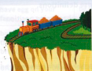
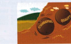
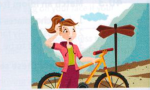
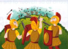
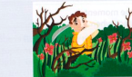
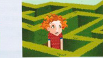

Roads
People: character, emotions and relationships
| example | meaning |
|---|---|
| Goodbye. I hope our paths cross again soon. | we meet |
| I’m really stuck in a rut in this job. I think I’ll look for something new. (rut = deep track or mark made by a vehicle on the surface of a road) | in a boring situation, with no hope of excitement, or future prospects |
| This computer’s driving me round the bend! It keeps crashing each time I try to save my work. | making me angry and frustrated |
| This book is right up your street/alley. It’s called ‘How to make a million in a year’. (alley = narrow street or lane with buildings on either side) | perfect for you; exactly what interests you |
| Josh is very middle-of-the-road politically. | neither left-wing nor right-wing, has no radical views |
Road idioms that comment on situations
I think the government is on the right/wrong track these days. [thinking or acting rightly/wrongly]
It’s an uphill battle/fight/struggle trying to persuade Joe to get a job. [a very difficult task]
That restaurant’s really gone downhill lately. [it was good, but is not any longer]
She lives right off the beaten track, but she loves the peace and quiet. [in a very isolated place]
The Conservative Party is at a crossroads. [at a decisive moment in its history]
This job I have now is a complete dead end. [it has no future / no prospects]






I use a bicycle these days to go/get from A to B. [to make simple/typical journeys]
The new hotel has really put the village on the map. [now everybody has heard of the village]
Well, it’s almost midnight. We should hit the road. [start our journey (home)]
Road rage is increasing in many countries. [violent incidents resulting from traffic disputes]